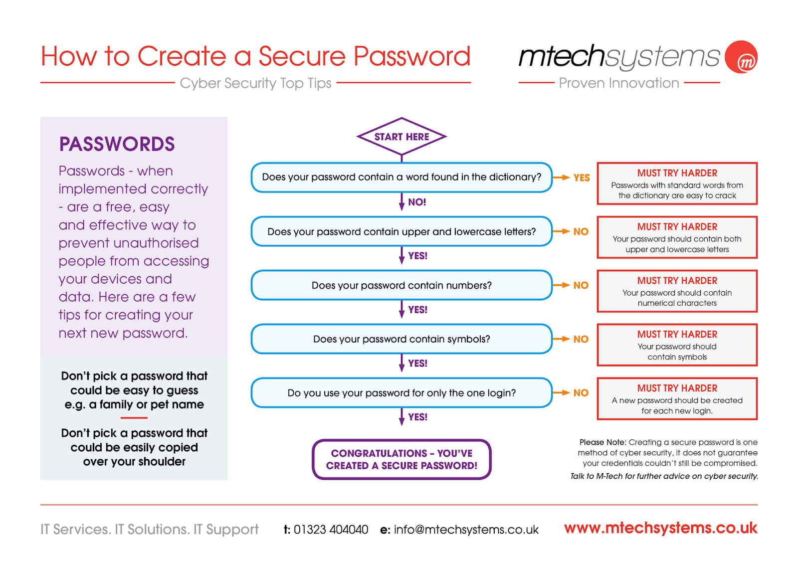

To commence, digital media has become dominant in the world we live in. Digital media has some bad and good influences on people. Digital media allows people to raise their voice, and it is very helpful for research. Especially, in the times of pandemic it helped students in continuing their studies online and learning by spending time on it.
Hacking:
So here I am going to discuss some of the most common ways hackers use to hack password combinations.
- Guess: a hacker can try to guess your password and can hack it if your password is easy. Like, 12345, iloveyou or etc.
- Phishing: it is the most common way of hacking passwords nowadays. Usually carried out sending spam emails, calls and text.
- Malware: malicious software used to steal personal data is called malware. Software like ransomware, are highly specialized malware families that target passwords especially.
Safety:
As we are living digital life's; spending time on social sites and other websites. I am overly concerned about privacy, but unfortunately, we must provide some information about ourselves to continue using any media. To keep secure that information which should not be accessible by anyone else we use passwords. You can generate a strong password by following these instructions;- Use meaningless words, numbers and symbols.
- Use uppercase and lowercase alphabets.
- Use special characters.
- Change password oftenly
Conclusion:
Lastly, I will recommend everyone to change their account passwords often. Create 2FA (2 factor authentication), so whenever someone or you login to your account from any other device it will ask to grant permission from the device you are originally using. It might be inconvenient for some people but can help you alot, keeping your personal information secure. These ways can affect you like changing passwords and creating some security stuff. In addition to this, you can also create security questions that might be difficult for hackers to guess.
References:
Nicoles, J. (1999, 08). Password hacking.ITPro.
https://www.itpro.co.uk/security/34616/the-top-password-cracking-techniques-used-by-hackers